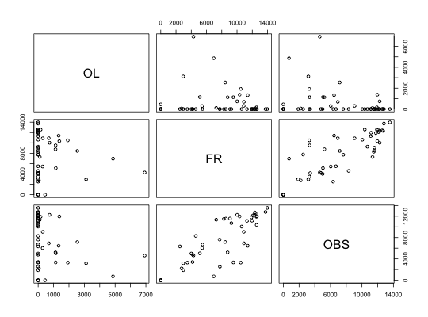
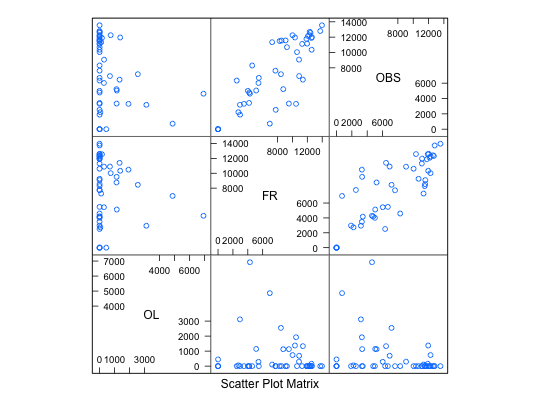

To estimate the total surface occupied by fruit trees in 3 small areas (R63, R67, and R68) of Navarra (Spain) in 2001, a sample of 47 square segments has been taken. The experimental units are square segments or quadrats of 4 hectares, obtained by random sampling after overlaying a square grid on the study domain. Data are used in Case Study: Fruit Trees, Chapter 12.
A data frame with 47 observations on the following 17 variables:
R63,
R67, and R68Militino, A. F., et. al. (2006) “Using Small Area Models to Estimate the Total Area Occupied by Olive Trees.” Journal of Agricultural, Biological and Environmental Statistics, 11: 450-461.
Ugarte, M. D., Militino, A. F., and Arnholt, A. T. (2008) Probability and Statistics with R. Chapman & Hall/CRC.
with(data = satfruit, pairs(satfruit[ , 15:17]))# Trellis Approach splom(~data.frame(satfruit[ , 15:17]), data = satfruit)